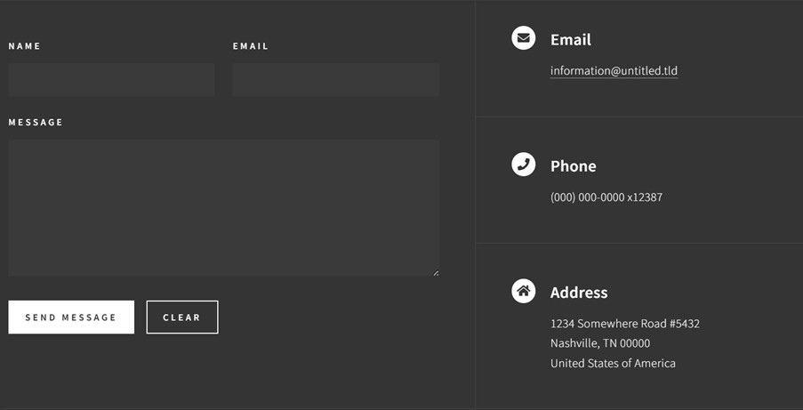
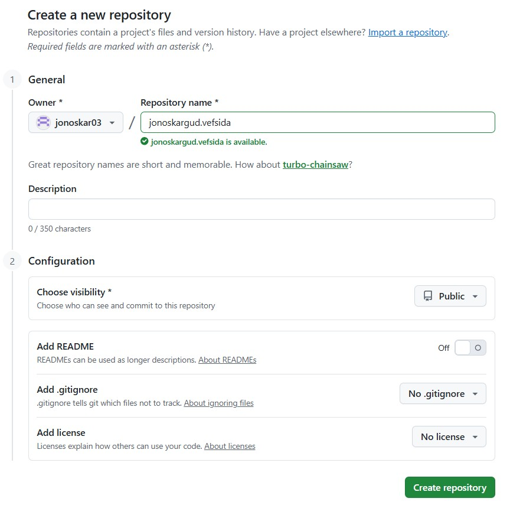
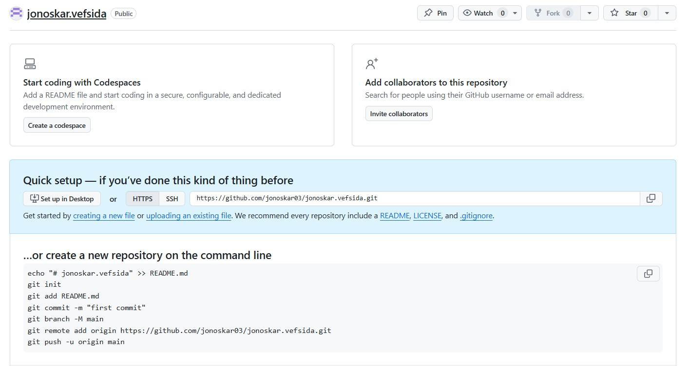
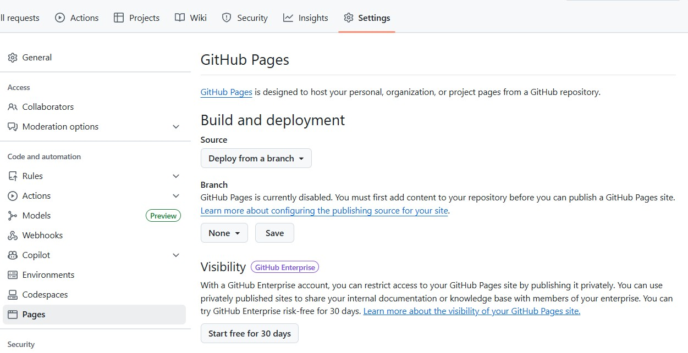

Assignment 1 - Making a Website

Introduction
In this assignment I am required to I make or modify a template of a website that includes all assignments that will be done in the course VÉL608G "Tölvustudd Framleiðsla." It should also include my resume and a short introduction about myself and what I want from this class.Preparation
I started by finding a HTML template that I could use and modify to make it look the way I wanted it. I wanted to find a template that would take you from the index/main page to another page where you would see a detailed description of the assignments, but the main page of the website would only have a brief description of the assignments. All the subpages should also be accessible right as you open the main page, so it is not necessary to scroll down to find subpages. I also wanted the template to fill the screen well and not have a lot of places that were just empty. The assignment pages should also be simple enough and structured similarly to formal reports.
The best template I found based on this was Forty designed by HTML5UP, which I also thought looked good. A live demo of the template can be found here at https://html5up.net/forty.
Making of the website
I uploaded the template files into the code editor Phoenix Code from https://brackets.io/, which turned out to be a really convenient editor to use to change the website, and even showed the changes live as I worked which helped a lot.
Front page
I started by working on the index or the main page of the website. It was mostly how I wanted it to be. I started by changing the names of the subpages and their descriptions by simply pressing the names on the live demo of the website which redirected me to that code, and there I could change the names. I needed also to change the images on the website to ones that made sense for each subpage. Some of those images were my own, and some of them I got from Pixabay which has free openly licensed images.

I wanted to clear the "send message" part of the index as I felt it didn't make sense to have it there. Then to fill in that blank spot I made it so that the information on the left went in horizontal order. This was done by first deleting all the part of the code that included the "send message" and then in the css main script I added this code, shown here with description of what each code does.
/* Horizontal layout for contact info */
#contact .split {
display: flex; /* Enables horizontal / vertical layout control */
flex-direction: row; /* Want it to be in rows/horizontal */
}
/* Equal width for columns */
#contact .split > section {
flex: 1;
}
/* Contact section layout */
#contact {
max-width: 1300px; /* controls how wide the section can get */
margin: 0 auto; /* centers it horizontally */
padding: 2rem 2rem; /* space from screen edges */
}
/* Vertical spacing inside contact blocks */
#contact .contact-method h3 {
margin-top: 2rem; /* Add space above the heading */
margin-bottom: 0.5rem; /* Add space below the heading */
}
Assignment page
The template provided a html called generic.html that I was able to use for all the assignments, about me page and resume page, just by making duplicates and renaming them. The only issue I cam across while doing this page was that the images didn't look as good as in the front page. I asked ChatGpt what the best way was to get the images into the website, so it would have the best graphics possible and a modifiable size. The code it provided worked really well and can be seen here below.
.responsive-img {
max-width: 100%;
height: auto;
display: block; /* makes margin auto work */
margin: 0 auto; /* centers horizontally */
}
.image-wrapper {
max-width: 450px; /* If the pictures get to big they will be
maxed at 450px */
}
Github upload
When everything in the website was ready the only thing left to do was to upload it to Github.
Step 1
First I created a new repository, made sure it was public and had a good link name.

Step 2
I right clicked on the folder where all the files for the website were, and choose Git Bash Here.
Step 3
Github showed something that said "...or create a new repository on the command line." I copied that code and put it into the command that opened when I did step 2.

It didnt work right away so I had to add first git add . then git commit -m "Add website files" then git push --set-upstream origin main.
Step 4
After this, all the files were in the Github, the only thing I had left to do was go to settings, click pages and set the branch from "None" to "main" and save.

After only a few minutes the website was then published. Here is the GitHub repository link, https://github.com/jonoskar03/jonoskargud.vefsida.